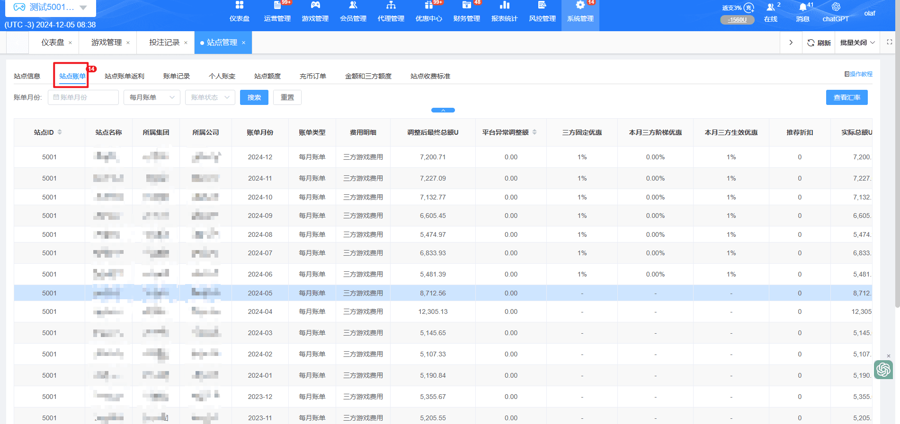
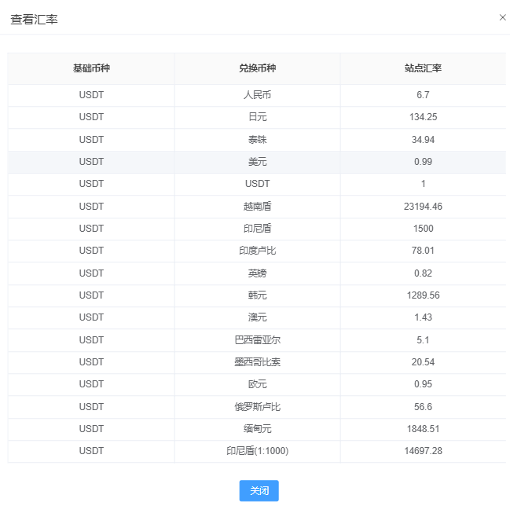
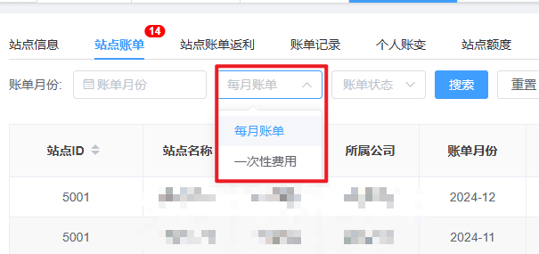
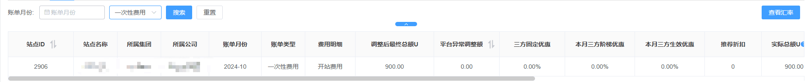
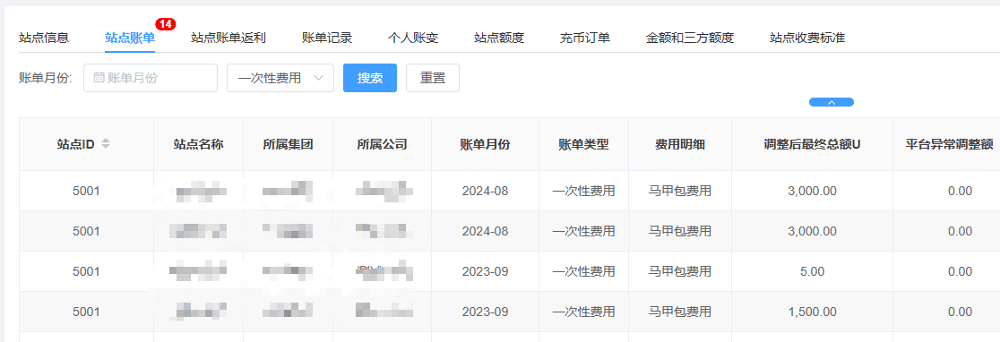
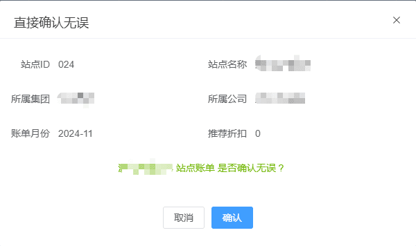
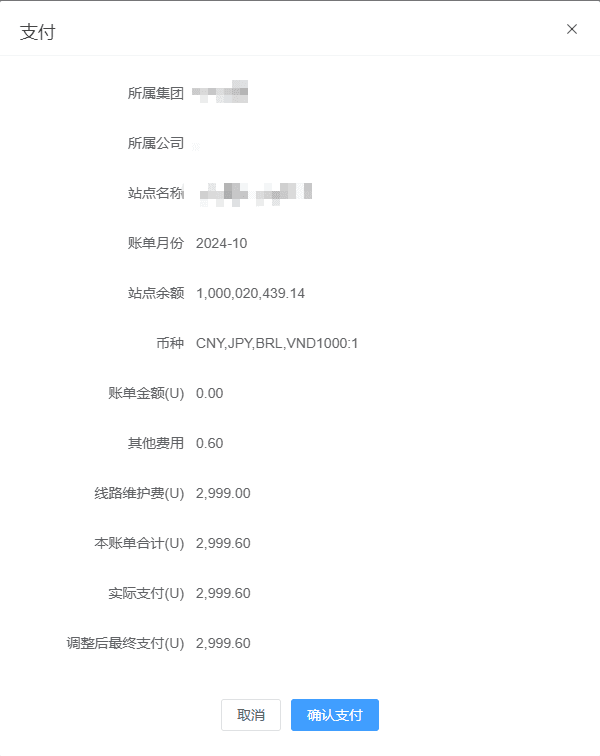

一、账单管理
（1）功能说明：用于了解整个直营站点的详细明细，其中包含了服务费等相关的信息结算（游戏抽成设置的每次改动，则下次账单生效，已经生效的则不影响）
温馨提示：每个月固定的账单生成于每个月的2号生成，为月结账单

（2）汇率查看：显示各币种兑换USDT币种

（3）账单费用：共分两种，每月账单与一次性费用。

a. 每月账单：每个月固定生成的实时账单，于下个月6号00:00之后方可进行账单确认，确认后才可支付。
b. 一次性费用：一次性费用没有状态，仅作为明细提供参照，也无详情可查看。目前开站费用&马甲包费用为一次性收费。


（4）账单状态：共分七种状态，待下发、待核对、待支付、存在异议、已逾期、已支付、已坏账
a. 待下发：每月月初实时生成数据，于下个月月初后台自动下发账单，状态变更为待核对。
b. 待核对：上月账单下发后，当前版本于每月6号0:00之后，方可进行核对，点击确认无误之后账单状态会自动变更。核对状态倒计时为15天，15天之后会自动变更状态为待支付。

c. 待支付：账单核对完成之后，可以进行支付，当支付完成后账单状态变更为已支付。支付状态倒计时为30天，若超过时间未支付账单则自动变更状态为已逾期，并且逾期无法享有折扣。

d. 存在异议：由财务手动变更的状态，相关问题可咨询财务
e. 已逾期：已逾期账单无法享有折扣。
f. 已支付：支付成功的账单会到已支付状态，并且无限期保留记录
g. 已坏账：已逾期的账单，由财务手动调整之后的状态。